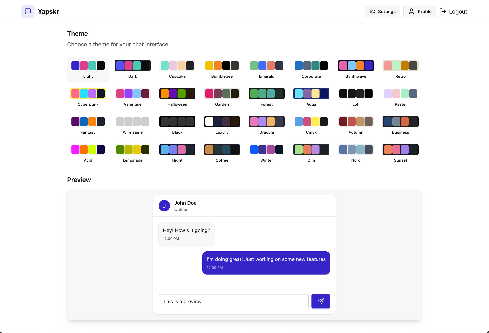
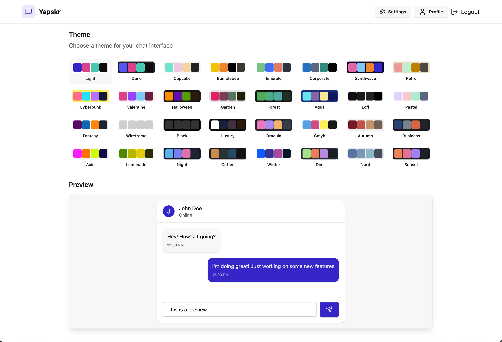

Here are a list of my complete and future projects. These projects tend to combine my programming and technology skills with my hobbies outside of my studies.
Below here are my complete projects. I may still be working on them, but they are in a presentable state.
A golf app I have created in Swift that displays every hole over hundreds of golf courses in Victoria. It allows the user to get distances to anywhere on the course, add clubs to their virtual bag and project the distance and dispersion for each of those clubs. There is also an elevation functionality which calculates plays-like distances using Google Maps' Elevation API. I am currently working on implementing an Augmented Reality fucntionality that will show the user their target line.
Major technologies, frameworks and libraries I have used in this app include Swift, UIKit, MapKit, CoreData, Firebase and Google Maps' Elevation API.
Here are some images of the app.


A Web Application I made using React, MongoDB, Express and Node.js.
It has a full authentication system and real-time chat functionality using web sockets.
It was a project I made to learn more about the relative libraries and frameworks, but also to gain experience with building and deploying a full app.
Major technologies, frameworks and libraries I have used in this app include
JavaScript, React, MongoDB, Express.js, Node.js, TailwindCSS, DaisyUI, Axios, Postman and Bcrypt.
Here are some images of the app.
 

A project that I worked on with a group in 2024. I worked on the entire 2D aspect of the project which is displayed on my GitHub. It allows users to create and display convex, 2D polygons, translate them and calculate, and estimate the intersection between 2 different polygons. It is an interactive web application created using Express.js and the entirety of the 2D is built using the p5.js framework.
Major technologies, frameworks and libraries I have used in this app include JavaScript, Express.js, Node.js, p5.js, HTML, CSS, Bootstrap and EJS.
Here is an image of the app. See the project for a demo video.

A companion watchOS app for my iOS app.
It currently displays the distance to the center of the green from the user's location and has a compass feature that points to the center of the green.
It communicates with the iOS app via WCSession and can save shot data to my project's Firestore.
The goal of this app is to detect a golf swing, save the data and have a full round tracking feature that I will be able to look over on the web application I am currently building.
This app is still in progress and will be updated once the web application is ready.
Major technologies, frameworks and libraries I have used in this app include Swift, SwiftUI, MapKit, Firebase, WCSession, watchOS and API integration.
Here is an image of the app.
A web app based on Wordle. Decided to code my own in a functional programming style for a bit of a challenge and variety. Made using JavaScript alongside HTML and CSS.
Major technologies, frameworks and libraries I have used in this app include JavaScript, Express.js, Node.js, HTML, CSS and Bootstrap implemented in a functional programming style where possible..
Using Python, Spotify, Musixmatch and OpenAI's APIs, I made a program that took a spotify playlist and grabbed track data, lyrics from Musixmatch and used GPT 3.5 and DALL-E 2 to analyse the lyrics and generate cover images for the playlist based on the analysis.
This was done a while ago and would like to extend this in the future.
4 images that were generated for my modern/dark techno playlist using DALLE-2:


4 images that were generated for my Aussie Indie playlist using Midjourney:


And another 4 images that were generated for my techno playlist using Midjourney:


07/2023
Here are some of the projects I'm currently working on.
A web application to link with my iOS and watchOS app, Swingify. I am creating this application using React, Express, Node and MongoDB. The goal of this app is to visualise the round data saved from my apps, add analysis features and other cool functionality to tie in with my golf apps. I'm currently working on the round analysis page.